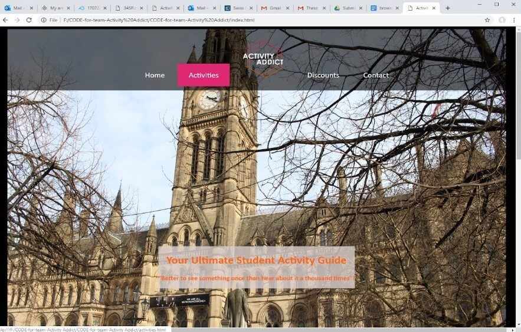
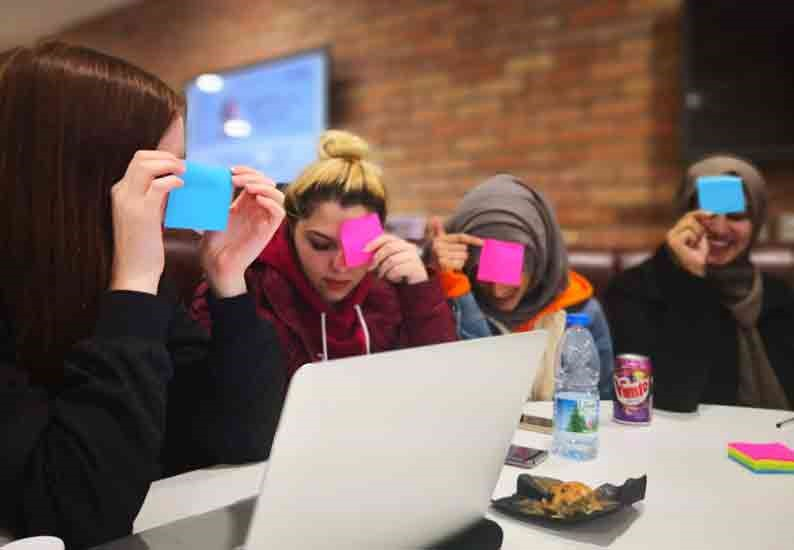
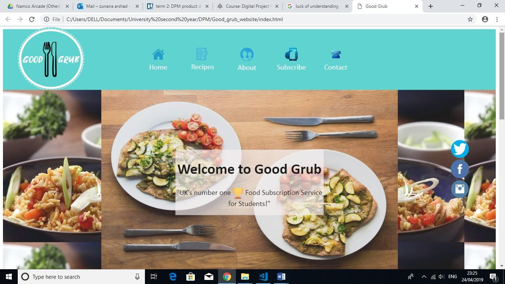
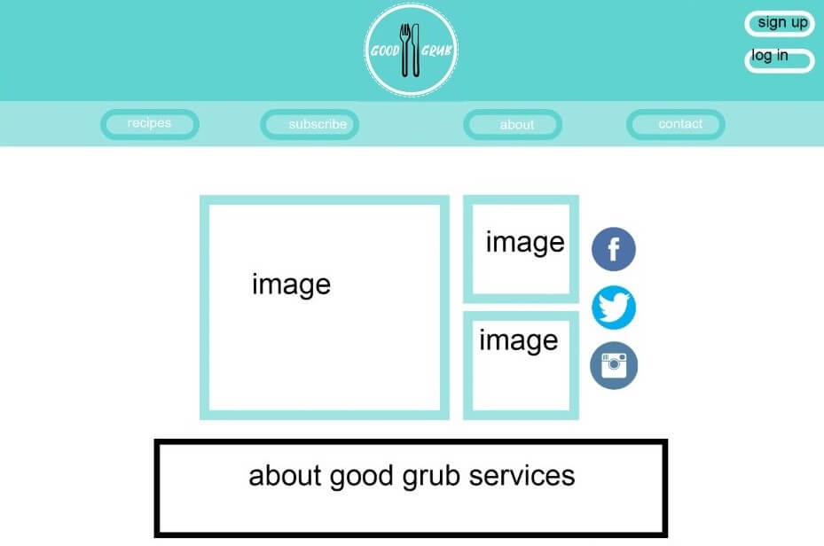

Websites
Activity Addict
This website is a part of my degree/ coursework from the second-year website development unit. The site was built as a team project 5 other members of my team participated equality in order to Plan, design and develop the Activity Addict website . Our aim was to develop a web guide for International and other students to be able to explor the casual activities within Manchester.
Activity Addict's website screenshot
The primary message that we had to convey was this idea that Manchester, is an all-inclusive city with activities for everybody, particularly for students who are looking to have fun within their spare time. The message was aimed towards our target market; students who are looking for ‘things to do’. The guide was to promote ‘fun’ activities to display the importance of having the perfect balance between your academic and social life. The message embedded within the site presents the view that students should not only be working hard at university but they should simultaneously be enjoying themselves and having fun.
Team work
The team undertook the task efficiently we all shared knowledge and explored new skills. Before developing the website, we had to come up with an idea of what to develop, when that was finalise, we all did individual research such as on our competitors and the client user requirements. Then we planned the strategy as a team to start our designs which included Hi fidelity – Low fidelity wireframes, sketches, mood boards and other designing techniques, the team decided to divide up the work between each member of team so we could quickly start developing. After helping my team in the designing process, it was finally time for my big role in the team as a developer, I have coded the from the start to end but of course my team was always there to help me, and they all had tasks to undertake such as writing project reports etc.
Good Grub
‘Good Grub’ is a food delivery/subscription service for students. This website is a part of my degree/ coursework from the second-year Digital Project Managment unit.
Aim of the website
Upon researching, it was found that many students have unhealthy diets because of their busy schedules, between juggling classes, hobbies, socialising and maintaining self-care. According to “5 facts about British university students’ eating habits”, “less than one-fifth eat healthy, having risky eating behaviour, that is, high snacking, high consumption of fast food and only moderate or low consumption of fruits and vegetables.” (Study International, 2015). In order, to encourage students to eat healthy whilst having a busy schedule, a food subscription delivery service would inspire students to cook more healthy meals at home because all the ingredients are delivered to individuals in a package providing easy recipes to follow and the freshest ingredients.
Good Grub's Home Page screenshot
Design process
The group strongly felt that in order to create a successful design, rough drafts had to be made to be able to visualise of how the end prototype will look like. Developing prototypes may vary from sketches that “look and function like the final product” (Smashing Magazine, 2010). Therefore, it was important to include notes throughout the process of sketching out ideas, so the team knew the importance for each detail.
Good Grub's final wireframe ideas
My Role
My role was relevant to management, as a developer I kept every one informed and made sure they all have the understanding of what they are doing and hand me in the individual designs and written content tasks they have undertaken on team settled deadline for the website so I could code the website on time.